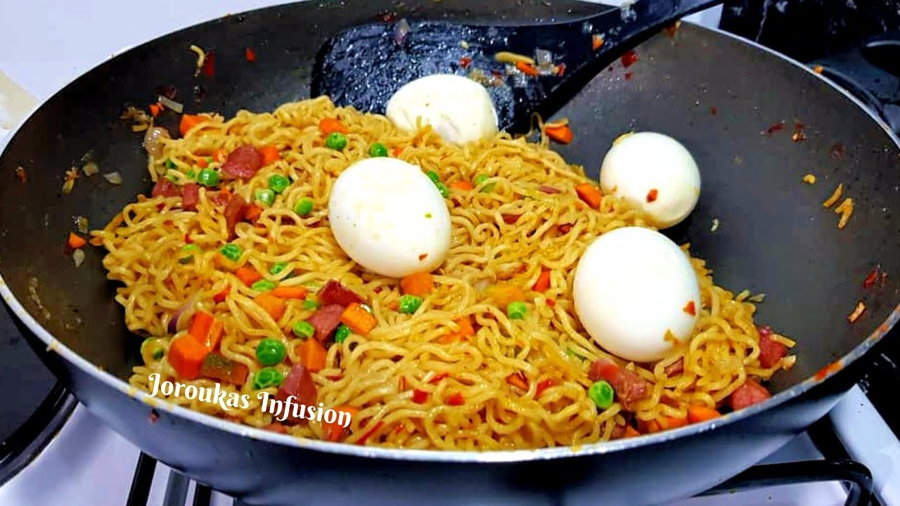

Indomie Noodles

Description
Ingredients
- 1 pack of Indomie noodles
- Water
- Vegetable oil
- Onion (chopped)
- Bell pepper (chopped)
- Scotch bonnet pepper (chopped)
Steps
- Place the noodles in a pot of water and bring it to a boil for 3-4 minutes
- When the noodles are done, drain them using a colander or sieve and set them aside
- In a separate pan or pot, heat some cooking oil over medium heat. Add the chopped onions and sauté
- Add the chopped green and red bell peppers and the scotch bonnet pepper, to the sautéed onions
- Season the mixture with your choice of seasoning and the noodles seasoning. Adjust the seasoning to your taste
- Mix the cooked Indomie noodles into the seasoned pepper mixture
- Stir well to coat the noodles evenly with the flavors
- Your Indomie noodles is ready to be served. You can eat with eggs, meat, or fish
Back to Home